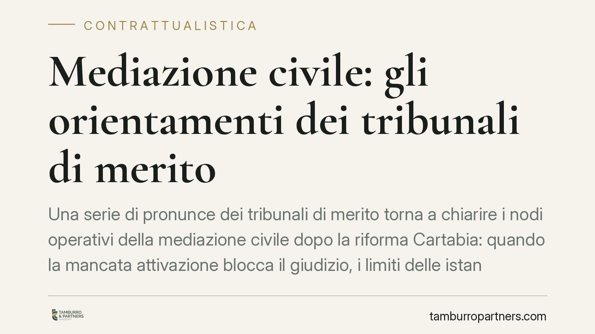

Mediazione civile: gli orientamenti dei tribunali di merito
Una serie di pronunce dei tribunali di merito torna a chiarire i nodi operativi della mediazione civile dopo la riforma Cartabia: quando la mancata attivazione blocca il giudizio, i limiti delle istanze cumulative e le conseguenze del mancato esperimento della mediazione disposta dal giudice. Nodi che, se trascurati, portano all'improcedibilità della domanda.

Il quadro normativo dopo la riforma Cartabia
La mediazione civile è disciplinata dal d.lgs. 28/2010, profondamente rivisto dal d.lgs. 149/2022 (riforma Cartabia). L'assetto vigente distingue con nettezza due figure che spesso vengono confuse.
L'art. 5 individua le materie in cui il previo esperimento della mediazione è condizione di procedibilità della domanda giudiziale (tra le altre: condominio, diritti reali, locazione, comodato, affitto d'aziende, contratti assicurativi, bancari e finanziari). In queste materie chi agisce deve avviare la procedura prima di andare in giudizio; in difetto, la domanda è improcedibile.
La mediazione demandata dal giudice è invece regolata dall'art. 5-quater: è il giudice che, valutata la natura della causa e lo stato dell'istruttoria, può disporre l'esperimento della mediazione anche in materie non incluse nell'elenco dell'art. 5. Anche in questo caso il mancato avvio nel termine assegnato produce l'improcedibilità.
La distinzione non è formale. La mediazione obbligatoria opera come filtro preventivo di sistema; quella demandata è uno strumento di gestione del singolo processo. Sovrapporle è l'errore da cui derivano molte delle criticità che i tribunali di merito continuano a segnalare.
Cosa emerge dagli orientamenti recenti
Diverse pronunce di merito hanno consolidato alcuni punti fermi. Li trattiamo per orientamento, senza attribuirli a decisioni non ancora dotate di estremi pubblicati e verificabili: chi intenda richiamarli in giudizio dovrà reperire il provvedimento specifico.
Corrispondenza soggettiva e oggettiva. La mediazione deve riguardare le stesse parti e lo stesso oggetto della successiva domanda giudiziale. Un'istanza "cumulativa", che accorpa posizioni o pretese eterogenee e poi confluisce in cause distinte, rischia di non soddisfare la condizione di procedibilità per nessuna di esse. Il principio è coerente con la funzione conciliativa dell'istituto: senza perimetro definito, l'incontro non può assolvere alla sua ratio.
Mediazione demandata e improcedibilità. Se il giudice dispone la mediazione ex art. 5-quater e la parte onerata non la avvia entro il termine, la domanda è improcedibile. Non basta una partecipazione formale al primo incontro: la giurisprudenza richiede un impegno effettivo, coerente con il coordinamento tra il rifiuto ingiustificato di partecipare e l'art. 116, comma 2, c.p.c., che consente al giudice di trarne argomenti di prova.
Regime delle spese. Le spese della fase di mediazione seguono il criterio della soccombenza all'esito del giudizio. La mancata partecipazione senza giustificato motivo può inoltre esporre alle conseguenze sanzionatorie previste dal d.lgs. 28/2010, oltre a incidere sulla valutazione complessiva della condotta processuale.
Effetti sulla prescrizione. Sul piano interpretativo, l'art. 5, comma 6, d.lgs. 28/2010 collega alla comunicazione dell'istanza di mediazione effetti sostanziali analoghi a quelli della domanda giudiziale, con impedimento della decadenza e interruzione della prescrizione. La portata di tali effetti nelle ipotesi di mediazione facoltativa resta oggetto di letture non uniformi: prima di affidarsi all'istanza per interrompere un termine in scadenza, è opportuno verificare l'orientamento applicabile alla singola fattispecie.
Implicazioni pratiche
Per chi opera in materia contrattuale e condominiale il messaggio è concreto. Nelle controversie condominiali la mediazione è quasi sempre obbligatoria: un vizio nell'attivazione può travolgere l'intero giudizio in fase di rito, con perdita di tempo e costi. Nella contrattualistica, l'inclusione di banca, assicurazione e locazione nell'elenco dell'art. 5 impone di verificare a monte se la lite rientri tra le materie a procedibilità condizionata.
La fase conciliativa non è un adempimento burocratico. Un'istanza mal costruita — cumulativa, generica, non corrispondente alla successiva domanda — è un rischio processuale a tutti gli effetti.
Cosa fare in concreto
- Verificare la materia prima di agire: accertare se rientra tra quelle a procedibilità condizionata dell'art. 5 o se possa essere disposta la mediazione demandata ex art. 5-quater.
- Curare la corrispondenza soggettiva e oggettiva tra istanza di mediazione e domanda giudiziale, evitando istanze cumulative su pretese eterogenee.
- Rispettare i termini fissati dal giudice per la mediazione demandata e documentare l'avvio effettivo della procedura.
- Partecipare in modo sostanziale al primo incontro: l'assenza ingiustificata può produrre conseguenze economiche e valutative sfavorevoli.
- Reperire gli estremi delle pronunce di merito che si intendono richiamare, verificandone la definitività e la pertinenza alla fattispecie.
Disclaimer
Contributo informativo a cura di Tamburro & Partners - Avv. Giuseppe Tamburro. Non costituisce parere legale.
Ogni contratto ha il suo equilibrio.
Se vuoi una revisione delle clausole o una redazione su misura, scrivi allo studio. Ti rispondiamo entro un giorno lavorativo.